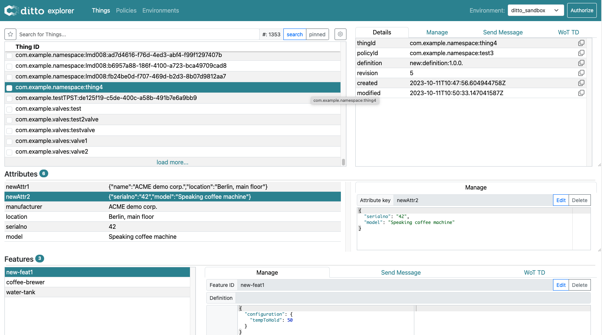
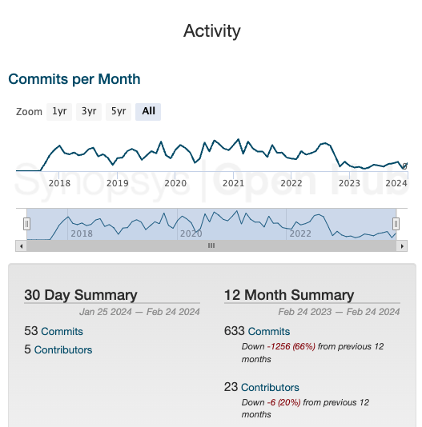
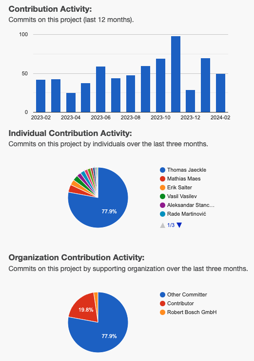

Status February 2024
27.02.2024
Ditto in a nutshell

Ditto as IoT "middleware"
utilizing
Digital Twin
pattern
since version 3.0.0, Ditto provides a web UI
History
- Eclipse Ditto was open sourced 08/2018 by Bosch.IO
- then, already used productive at Bosch.IO (as a SaaS)
- out of Eclipse incubation with 1.0.0 in 12/2019
- every 3-5 months a release since then
- Bosch.IO announced (10/2022) shutdown of their SaaS offering for mid of 2024
- Bosch reduced resources on Ditto development since then
- projects at Bosch still using SaaS service migrated to Ditto
- most contributions are now from outside of Bosch
Stats
| 2018 | 2020 | 2022 | 2024 | |
|---|---|---|---|---|
| Github stars | 65 | 204 | 411 | 566 |
| Docker pulls ~ | 1.200 | 10.000 | 80.000 | 167.000 |
| Active committers | 8 | 8 | 8 | 2 |
| Adopters* | 1 | 6 | 6 | 8 |
| Contributors | - | ~ 8 | ~ 8 | ~ 5 |
* officially declared, we know of more
Achievements - Releases
- 3.2.0 (03/2023): History API (retrieve things at given time from the past); stream all historical changes
- 3.3.0 (06/2023): Revived Ditto Helm chart (moved from IoT Packages to Ditto repo, added lots of config options); improvements to PATCH APIs
Release 3.4.0 (10/2023)
- exchanging main dependency "Akka"
with "Apache Pekko" - reason: Akka license change from ASL-2.0 to BSL-1.1
- Ditto heavily relies on the Akka toolkit
- fork of Akka under Apache-Foundation with name "Apache Pekko" was done and released
- other small enhancements as well
Release 3.5.0 (01/2024)
- search in the history of a thing
- configure per namespace which fields to index in the Ditto search index
- expose configured count queries as Prometheus metrics
- show policy imports in UI; enhance UI to perform devops commands; several usability improvements
- improve stability in Kubernetes when doing rolling updates
Project health


Contributions
Ditto receives more (big) contributions from non-committers, e.g.:
- Configure on a namespace basis the fields to index in the thing-search by Ditto adopter Synamedia
- many UI contributions from @thfries (private contributor)
- MQTT related and operational contributions from @dimabarbul, working for Lohika
Achievements - Blog posts
- HiveMQ (one of their customers was willing to replace Azure IoT Hub with HiveMQ and Ditto):
- Integrate Eclipse Ditto Things in an Asset Administration Shell Environment (published today)
Blog post:
Ditto Benchmark (09/2023)
- Bosch.IO performed an extensive benchmark
- based on Ditto deployed together with Apache Kafka in Kubernetes on AWS, with Atlas MongoDB (DBaaS)
- benchmark toolkit was open sourced in the Ditto GitHub repo
- scenario with
1.000.000things showed horizontal scalability capabilities
Roadmap
we have to deal with reduced resources for Ditto development
Short term (next major release):
WoT (Web of Things) enhancements
- validation/enforcement of WoT models: #1650
- updating WoT model versions: #1843
- enhancements of the UI, e.g. providing templates based on WoT actions when sending messages
* disclaimer: the "roadmap ideas" are based on what I, working for a company using Ditto, need from Ditto
Roadmap - Long term

It's up to us all
let's shape the roadmap as a community, without one single company dictating it
Q & A
thanks for attending
reach out to the Ditto team